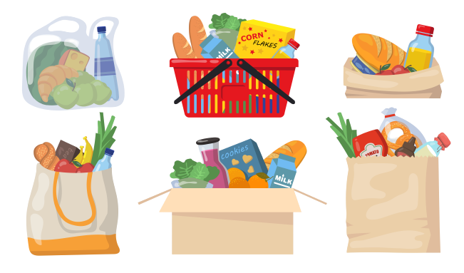
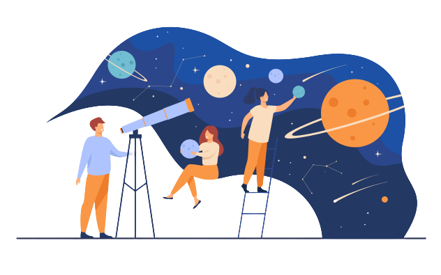

Adagrams
Adagrams is a fictional game in which a player is given a random set of letters and must make an anagram with those letters. The learning goals for this project include writing Ruby methods that declare, read, and manipulate data; writing Ruby methods that take in parameters and return manipulated data; using pair programming techniques; and learning how to write unit tests.
Solar System
Solar System is a CLI program that allows a user to see information about planets in our solar system, including but not limited to color, mass, distance from the sun, and a fun fact. The learning goals for this project include creating classes to bring together data and methods; creating a class that manages a collection of other objects; and writing code that interacts with classes.
Grocery Store
Grocery Store is a program to track information about orders and customers. The learning goals for this project include test driven development; using instance variables and methods; object composition; and reading data from a CSV file.
OO Rideshare
OO Rideshare is a program to track trip, driver, and passenger data using an object-oriented approach. The learning goals for this project include creating and instantiating classes with attributes; using composition to connect different classes together; working with several files and large amounts of data; writing pseudocode and tests to guide the process of writing code; and using inheritance to extend existing classes.
Slack CLI
Slack CLI is a program that uses the Slack API to provide users with information about channels and users in a Slack workspace as well as send messages to users and channels. The learning goals for this project include sending requests to and receiving responses from an API; working with data from an external source; mocking an external dependency during testing; and designing and implementing a program using inheritance.
- 
Food vector created by pch.vector - www.freepik.com - 
Star vector created by pch.vector - www.freepik.com
Image taken from https://pixy.org/639684/